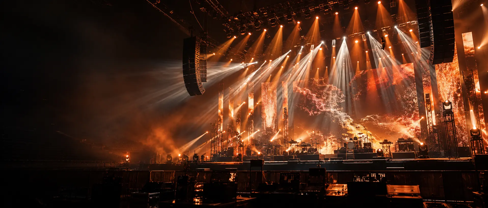
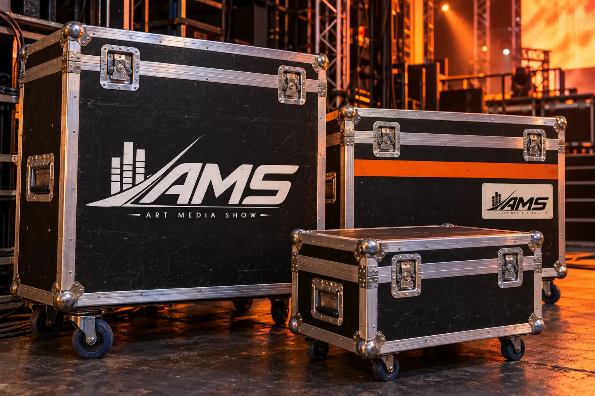
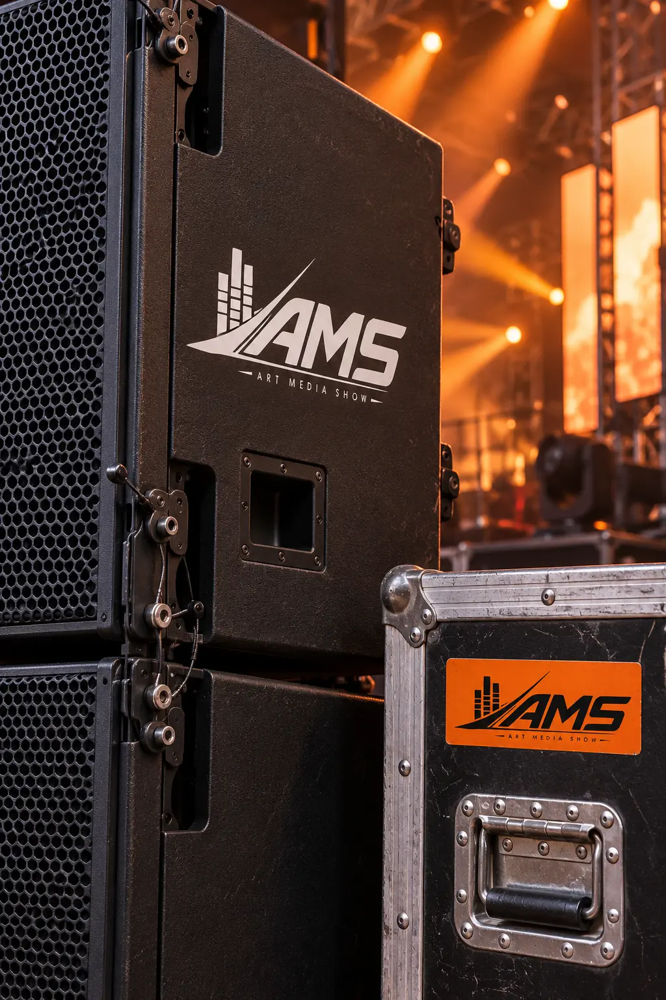
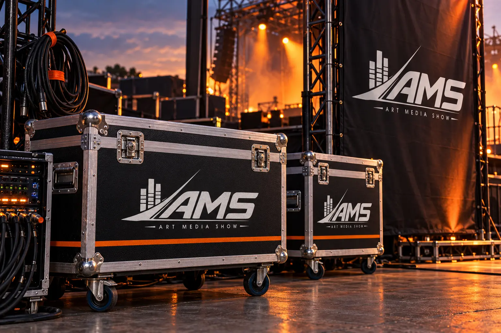
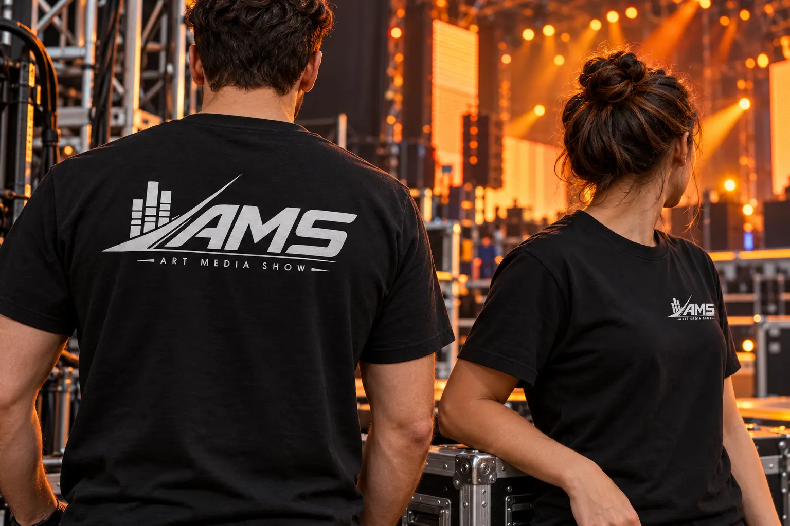
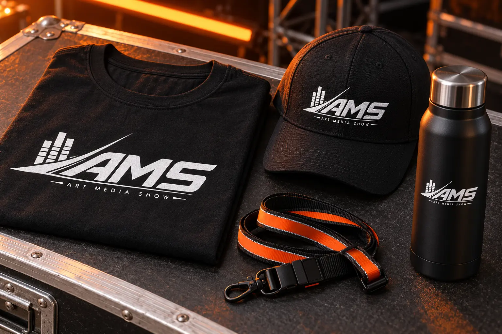
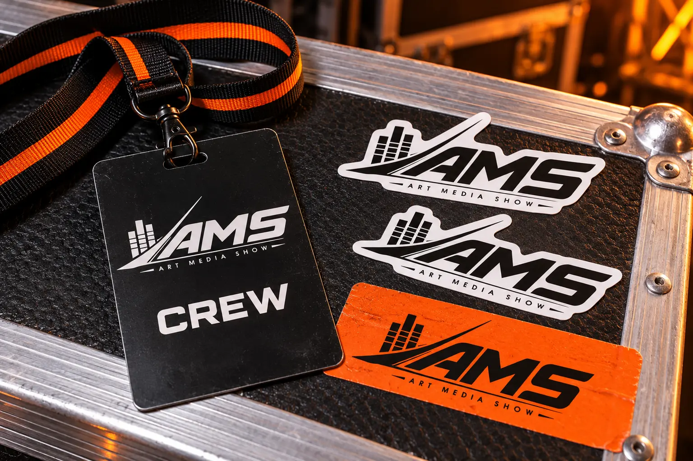

Art Media Show — айдентика, мерч и сайт.
Всё для вашего мероприятия.
От фирменного знака —
до атмосферы большого шоу.
ЭНЕРГИЯ.
ТОЧНОСТЬ.
ОДИН ХАРАКТЕР.
У технической стороны шоу
тоже есть свой голос.
Art Media Show — команда технического обеспечения мероприятий: звук, свет, LED-экраны, сценические конструкции и спецэффекты.
Я разработала логотип, палитру и фирменный стиль, а затем перенесла этот характер в сайт. Чёрный фон, белый знак и оранжевый свет связывают все точки контакта.
- Айдентика
- Логотип, цвет, фирменная графика
- Digital
- Веб-дизайн и разработка
Новые визуализации сцены, мерча и техники — концепты применения айдентики.
ОТ ЗВУКА —
К ДВИЖЕНИЮ.
Эквалайзер, стремительная диагональ и наклонная типографика собираются в один узнаваемый знак.
01 / ЭквалайзерСвязь со звуком
02 / Световой штрихЭнергия и направление
03 / НаклонДинамика формы
ЦВЕТ,
КОТОРЫЙ ЗВУЧИТ.
Глубина чёрного. Ясность белого.
Оранжевый — как импульс света.
Bebas Neue / Акцент
ART MEDIA
SHOW
Крупная латинская типографика.
Manrope / Основа
Всё для
вашего
мероприятия.
Чёткий ритм заголовков и читаемый текст.
Rajdhani / Детали
LIGHT.
SOUND.
LED.
Технический характер коротких подписей.
СВЕТ СТАНОВИТСЯ
ФИРМЕННЫМ ПРИЁМОМ.
Световые траектории, контраст и оборудование — визуальный язык авторских макетов.


БРЕНД
В РАБОЧЕЙ СРЕДЕ.
Тот же знак — на больших кофрах, корпусах акустики и небольших этикетках.

Контраст / Маркировка / Масштаб
ВИДНО.
СРАЗУ.
Белый знак работает на чёрных фактурных поверхностях. Оранжевый акцент поддерживает узнаваемость — от большой панели до небольшой наклейки.
AMS / EQUIPMENT IDENTITY


КОМАНДА
В ОДНОМ РИТМЕ.
Крупное нанесение на спине и компактный знак на груди. Фирменный стиль становится частью одежды команды.

Единый комплект
Одежда, кепка, термос и лента —
один визуальный характер в разных материалах.




Маленькие носители / Большая система
ТОТ ЖЕ ЗНАК.
В ДЕТАЛЯХ.
Бейдж, лента и стикеры продолжают айдентику без лишних элементов. Главные ориентиры — чёткий логотип и контрастная палитра.
ЭНЕРГИЯ ШОУ.
ЛОГИКА САЙТА.
Айдентика переходит в интерфейс: тёмная сцена, крупные заголовки, оранжевый свет и понятный путь к заявке.
Открыть работающий сайт
Что делает команда
Звук, свет, экраны и техническое сопровождение.
Какая есть техника
Оборудование по категориям и просмотр фотографий.
Как это выглядит
Галерея событий, масштаб и атмосфера.
Обсудить событие
Контакты компании и форма заявки.
Ваш бренд / Следующая история
ДАДИМ БРЕНДУ
СВОЙ ГОЛОС.
Логотип, фирменный стиль и сайт,
которые работают как одна система.